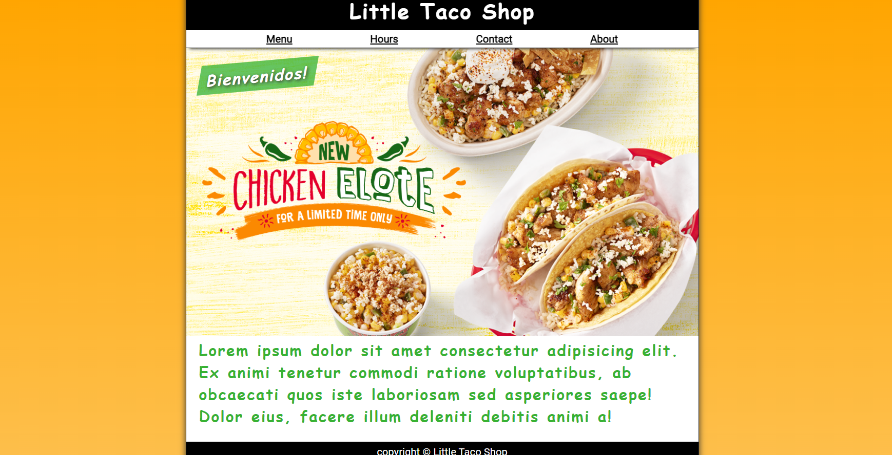
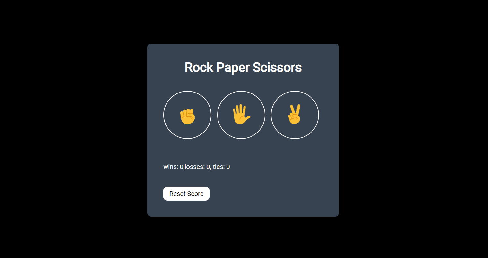
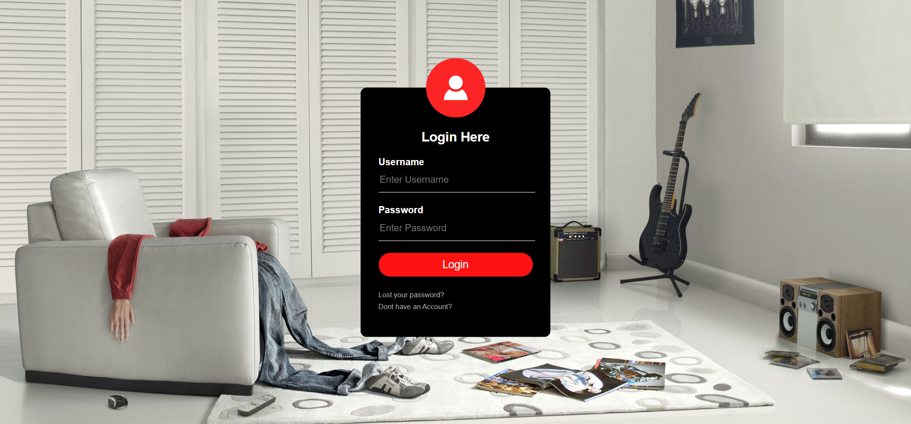

ABIDOYE KOREDE .T.
Web Developer

Welcome to my portfolio! I am a passionate web developer with a focus on creating clean and user-friendly websites. And also an Electrical/Electronics Engineer
Taco website project aimed at creating an engaging and visually appealing website that celebrates the art and variety of tacos. This interactive platform offers users a delightful experience by showcasing a diverse range of tacos, providing enticing recipes, even allowing users to place orders and its open hours
A "Rock, Paper, Scissors" game is a mini 90% Javascript and classic hand game often used as a decision-making tool between two people. The game has three possible outcomes, each represented by one of the three elements: rock, paper, and scissors.
A responsive simple HTML CSS login page, accessible and user-friendly on devices such as desktops, tablets, and mobile phones
Email: akoredeabidoyet@gmail.com